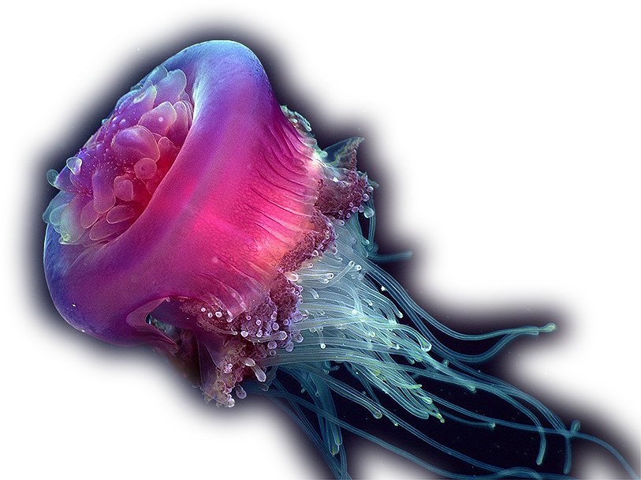
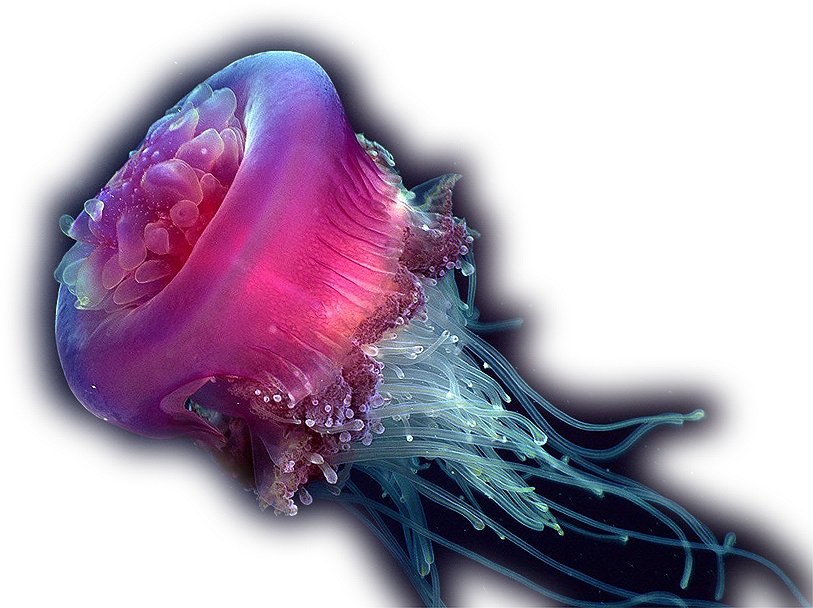
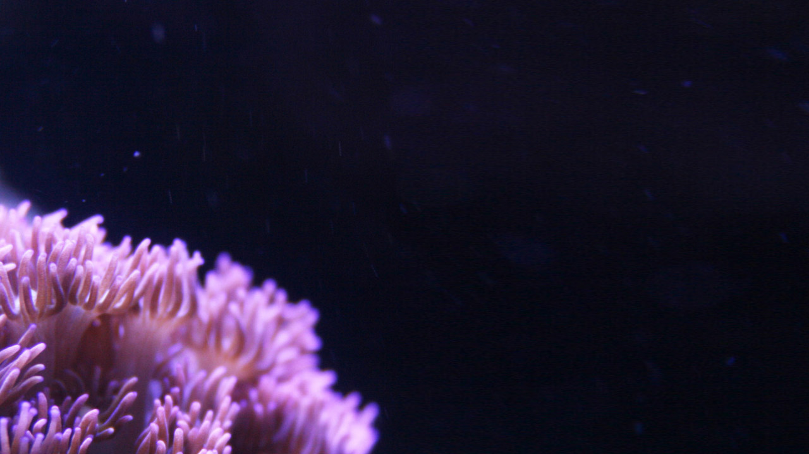

Jellyfish
Jellyfish or jellies are the major non-polyp form of individuals of the phylum Cnidaria. They are typified as free-swimming marine animals consisting of a gelatinous umbrella-shaped bell and trailing tentacles. The bell can pulsate for locomotion, while stinging tentacles can be used to capture prey. Jellyfish are found in every ocean, from the surface to the deep sea. A few jellyfish inhabit freshwater. Large, often colorful, jellyfish are common in coastal zones worldwide. Jellyfish have roamed the seas for at least 500 million years, and possibly 700 million years or more, making them the oldest multi-organ animal.

Clownfish
Clownfish or anemonefish are fishes from the subfamily Amphiprioninae in the family Pomacentridae. Thirty species are recognized, one in the genus Premnas, while the remaining are in the genus Amphiprion. In the wild they all form symbiotic mutualisms with sea anemones. Depending on species, Clownfish are overall yellow, orange, or a reddish or blackish color, and many show white bars or patches. The largest can reach a length of 18 centimetres (7.1 in), while the smallest barely can reach 10 centimetres (3.9 in). Clownfish are native to warmer waters of the Indian and Pacific oceans, including the Great Barrier Reef and the Red Sea.